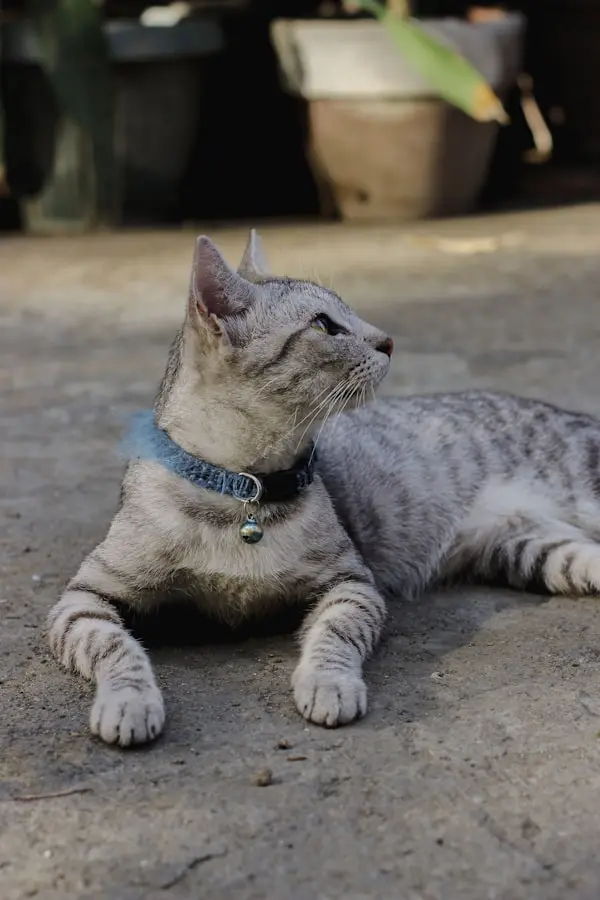

Hembra
Luna
 2 años
📍 Madrid
2 años
📍 Madrid
Luna es una gatita cariñosa y juguetona. Le encanta dormir al sol.
GrisCada gato merece una segunda oportunidad. Ayúdanos a encontrarles el hogar perfecto.
Estos adorables felinos están buscando un hogar lleno de amor. ¿Podrías ser tú su nueva familia?
2 años
📍 Madrid
Luna es una gatita cariñosa y juguetona. Le encanta dormir al sol.
Gris
1 año
📍 Barcelona
Simba es un gato naranja lleno de energía. Es muy sociable.
Naranja
3 años
📍 Valencia
Oreo es relajado. Perfecto para hogares tranquilos.
Blanco y Negro
4 años
📍 Sevilla
Misha es elegante y sofisticada. Le gusta la tranquilidad y los mimos.
SiamésHay muchas formas de apoyar nuestra misión. Cada contribución hace la diferencia.
Tu contribución nos ayuda a cuidar de más gatos necesitados.

Únete a nuestro equipo. Ayuda con el cuidado diario.
Necesitamos comida, arena, juguetes y medicamentos.

Ofrece un hogar temporal a un gato mientras encuentra familia.
Refugio Ronroneo es una organización sin ánimo de lucro dedicada al rescate, rehabilitación y adopción. Desde 2010, hemos ayudado a más de 2,500 gatos.
 Equipo Dedicado:
Más de 50 voluntarios comprometidos.
Equipo Dedicado:
Más de 50 voluntarios comprometidos.
Historias reales de personas que han adoptado o colaborado con nosotros.

"Adopté a Luna hace 6 meses y ha sido la mejor decisión. El equipo de la protectora fue increíble durante todo el proceso. ¡Gracias por vuestro trabajo!"
"Como voluntario, puedo decir que es una experiencia maravillosa. Ver a estos gatos encontrar hogares amorosos no tiene precio."
"Adopté a Simba y mi vida cambió completamente. Es el compañero perfecto. La protectora hace un trabajo excepcional."